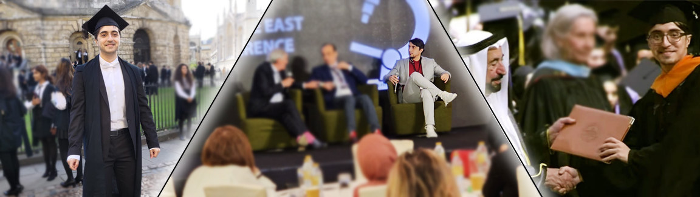
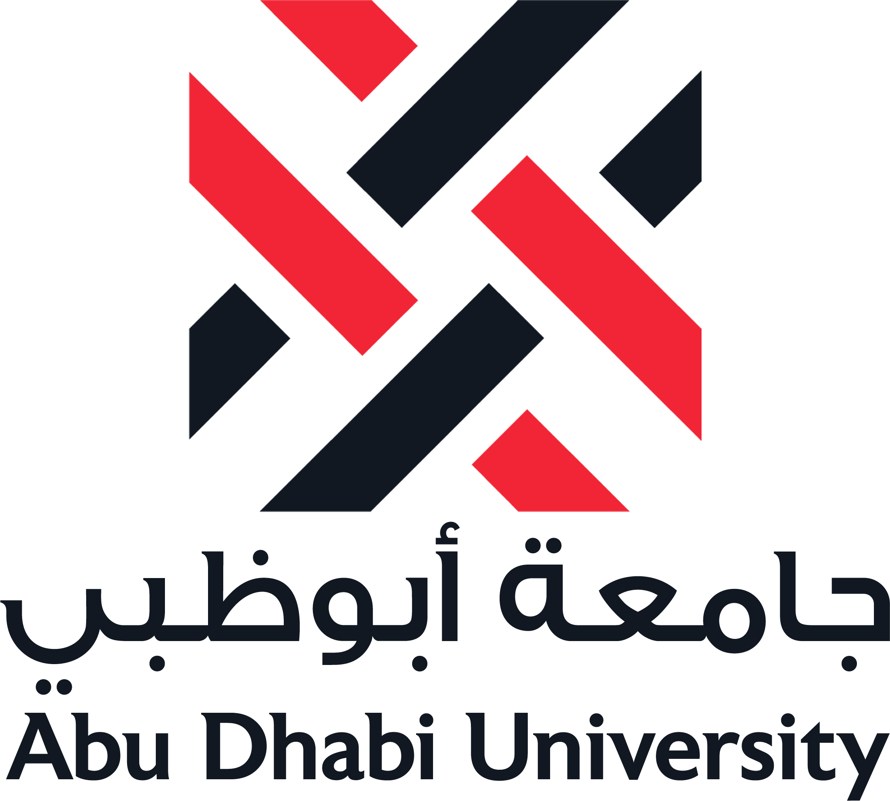
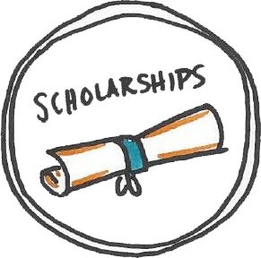

Mohanad Alkhodari, DPhil.
Mohanad Alkhodari, DPhil.
Education
—Academic degrees

DPhil., Medical Sciences — Cardiovascular Engineering
Doctor of philosophy (DPhil.) student at the cardiovascular clinical research facility (CCRF), Radcliffe department of medicine (RDM), University of Oxford, United Kingdom.
Started in October, 2022, and expected to graduate by 2025.
Dissertation: Machine learning-based multi-organ multi-modality modelling of end-organ changes with hypertension progression in the UK Biobank.

M.S., Biomedical Engineering — Image Processing
Master of science (M.S.) degree in biomedical engineering from the biosicneces and bioengineering research institute (BBRI), college of engineering, American university of Sharjah (AUS), Sharjah, United Arab Emirates.
Started in August, 2017, and graduated in 2019.
Thesis: Using numerical modelling and image processing techniques to enhance the analysis of medical microwave tomography images.

B.S., Electrical Engineering — Signal/Image Processing
Bachelor of science (M.S.) degree in electrical engineering from the department of electrical and computer engineering, college of engineering, Abu Dhabi university (ADU), Abu Dhabi, United Arab Emirates.
Started in September, 2013, and graduated in 2017.
Capstone: Using image processing techniques to analyse smartphone-based thermal images of diabetic patients.
— Honours
- Graduated from American university of Sharjah (M.S., Biomedical Engineering) among the top academic achievers (top 5-10%) in the program.
- Graduated from Abu Dhabi university (B.S., Electrical Engineering) with Cum Laude honors and 5x Dean's List for Academic Excellence certificates.
— Scholarships
- Full Oxford-Khalifa studentship (100%) awarded as a collaboration between University of Oxford, UK, and Khalifa University, UAE, for academic and research excellence at both institutions to pursue the DPhil. degree in Medical Sciences at University of Oxford.
- Full scholarship (100%) for academic excellence to pursue the M.S. degree in Biomedical Engineering at American university of Sharjah (AUS).
- Partial scholarship (50%) to pursue the B.S. degree in Electrical Engineering at Abu Dhabi university (ADU).
— Grants
- The 3rd Forum for Women in Research: A grant competition for all Gulf Cooperation Council (GCC) countries universities.
Research grant of 2,750 USD (10,000 AED) for excellence in project idea and innovative approach awarded to support the development
of the research through providing project resources, software, and publication/travel expenses.
Project: Can machines “Feel” the emotions during a conversation? An AI-based modelling approach of emotional climate during conversations (Best 10 Teams out of 376, Link, awarded while being a PhD. co-advisor).
— Awards
International
- IEEE International Conference on Digital Health (ICDH) 2022: The global research proposals competition for graduate students at the conference in Barcelona, Spain. Participated as a co-advisor for a PhD. student with a part of her dissertation project, titled as: emotion recognition in interactive conversational speech using MFCC features, and won the second prize (Rank: 2nd, Link, awarded while being a PhD. co-advisor).
- PhysioNet/Computing in Cardiology Challenge 2022: Developed an advanced deep learning model that utilizes attention transformer units and wavelet-based features to detect cardiac murmurs in young patients phonocardiography recordings (Rank: Best 4/28, awarded while being a graduate researcher)
Regional
- Undergraduate Research Competition (URC) 2017: A competition for all Gulf Cooperation Council (GCC) countries universities, category of Information Technology and Computer Engineering, participated with the undergraduate senior design project (capstone) of a smartphone-based application to detect early-stage diabetic foot ulcer (DFU) in diabetic patients using image processing techniques (Rank: 1st/12, Publication 1, Publication 2, awarded while being a B.S. student)
National
- UAE Ministry of Health and Prevention (MOHAP) Innovations in Health Hackathon 2019: Proposed a complete technical and business designs of EpiCap: a smart wearable cap for epileptic patients (Rank: 1st/8, awarded while being an M.S. student).
- Think Science Fair 2017: A competition for all UAE universities, category of Biomedical Systems, participated with the undergraduate senior design project of a smartphone-based application to detect early-stage diabetic foot ulcer (DFU) in diabetic patients using image processing techniques (Rank: 3rd/10, Publication 1, Publication 2, awarded while being a B.S. student)
Extra-curricular
- British Heart Foundation Centre of Research Excellence (BHF-CRE) 2022: Designed a graphical research image based on a theme for the cardiovascular clinical research facility (CCRF) titled as: IA: (I)nsightful (A)spirations Towards Merging Human Knowledge with (A)rtificial (I)ntelligence in Cardiology (Rank: 1st/11, Link, awarded while being an DPhil. student)